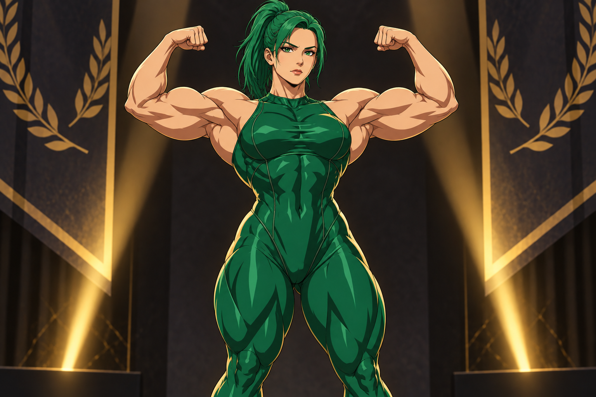

POWER COLLECTION / 01MUSCLEIS ART
PICK UP & PLAY
そのパワーで、挑め。
狙え。覚えろ。自分の記録を超えていけ。
THE GAME LIBRARY
今日、何して遊ぶ？
見つかりませんでした。検索語やジャンルを変えてみてください。
全作品のテキスト一覧
筋肉ブレスシンク
筋肉ロープスキップ
筋肉プロテインホール
筋肉フォーカスリング
筋肉パンプウィンドウ
筋肉ポーズチェーン
筋肉マクロソート
筋肉オービットドッジ
筋肉レップラリー
筋肉グリッドガード
筋肉パルススイッチ
筋肉ミラーパス
筋肉レーンリフト
筋肉フリップライン
筋肉ジャッジスプリント
筋肉フォームチェック
筋肉ノノグラム
筋肉フラッピー
マッスルクラフト
筋肉パズル
筋肉ガチャ
筋肉神経衰弱
筋肉スライドパズル
筋肉タイピング
筋肉クイズ
筋肉ジグソー
筋肉おみくじ
筋肉相性診断
筋肉リアクション
筋肉キャッチ
筋肉ランナー3D
筋肉シューティング
筋肉ティアリスト
筋肉ビフォーアフター
筋肉バトル
筋肉2048
筋肉フリック
筋肉タワー
筋肉カレンダー
筋肉スネーク
筋肉ブロック崩し
筋肉ルーレット
筋肉リズム
筋肉間違い探し
筋肉ワード当て
筋肉スロット
筋肉モグラ叩き
筋肉ポン
筋肉ハングマン
筋肉迷路
筋肉バブル
筋肉サイモン
筋肉クリッカー
筋肉インベーダー
筋肉ブロックパズル
筋肉マッチ3
筋肉ダーツ
筋肉フィッシング
筋肉バランス
筋肉ローグライク
筋肉バトルライン
筋肉3Dブロック
筋肉FPS
筋肉スラッシャー
筋肉ダンジョン
筋肉カード
筋肉アイドル放置
筋肉ピンボール3D
筋肉ボウリング3D
筋肉マージ
筋肉ダーツ3D
筋肉スタック
筋肉アーチェリー3D
筋肉バスケ3D
筋肉麻雀PRO
マッスルアングリーガール
にゃんこ大清掃
マッスルジャンプ
筋肉サバイバー
筋肉スリングクラッシュ
筋肉アローフィット
筋肉コンベアフィット
筋肉ヘキサブラスト
筋肉ジムジャム
筋肉ラックソート
筋肉ベンチボルト
筋肉パーキングポンプ
筋肉ロッカーマッチ
筋肉シェイカーソート
筋肉シートジャム
筋肉プレートポップ
筋肉マットフィット
筋肉ゲートスライド
筋肉ケーブルリンク
筋肉ピンプル
マッスルイレブン
筋肉ハンター
マッスルリアガード
マッスルウォーフェア
筋トレ単語探し
筋肉バトル精密版
筋肉4目並べ
筋肉ゴルフ3D
筋肉マインスイーパー
筋肉リバーシ
筋肉ピンボール
筋肉ボックスプッシュ
筋肉ツム
筋肉ブロック落とし3D
A LITTLE MORE MUSCLELOVE
その存在感を、
もっと近くに。
作品のお知らせや、新しいイラストはこちら。
公式のお知らせ ↗クリエイターを応援 ↗外部のブランドページへ移動します。